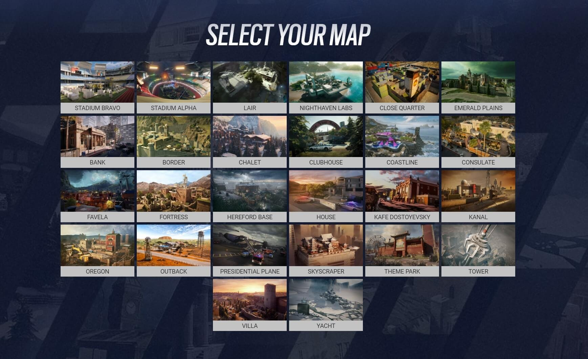

Pályák (Maps)
A Rainbow Six Siege pályái gondosan megtervezett, részletgazdag helyszínek, amelyek a taktikai játékra ösztönzik a játékosokat. Minden pálya egyedi környezetet és kihívásokat nyújt, melyekhez különböző taktikák szükségesek.
Pálya Leírás
Oregon
Egy vidéki farmépület, amely a közelharcra és a rejtett csapdák elhelyezésére ösztönzi a játékosokat.
Chalet
Egy alpesi faház szűk belső terekkel és nagy nyitott helyekkel, változatos stratégiákhoz ideális.
Kanal
Hidakkal összekötött ipari épületek, melyek egyaránt kihívást jelentenek a gyors mozgás és az átkelések miatt.
Bank
Egy többszintes banképület szűk folyosókkal és rejtett széfekkel, melyek kiváló védelmi pozíciókat biztosítanak.
Clubhouse
Egy motoros klub vidéki háza, mely több szintű játékteret és változatos helyzeteket kínál.
Emerald Plains
A "Emerald Plains" térképének egyik jellegzetes helyszíne, ahol tágas termek, világos üvegablakok és zöldellő környezet jellemzik az irodákat.
Consulate
Külügyminisztériumi irodák és konferenciatermek tere, amelyet szűk folyosók és tágas szobák tarkítanak.
lair
A "Lair" térképe egy titkos, ipari jellegű kutatóállomás, ahol a zárt, alagsori helyiségek és laborkörnyezetek egyedi kihívások elé állítják a csapatokat.
Kafe
A "Kafe Dostoyevsky" térképén egy elegáns, mégis veszélyes kávézó és étterem található, ahol a tágas, díszes belső tér és a szűk folyosók bonyolítják a harcot.